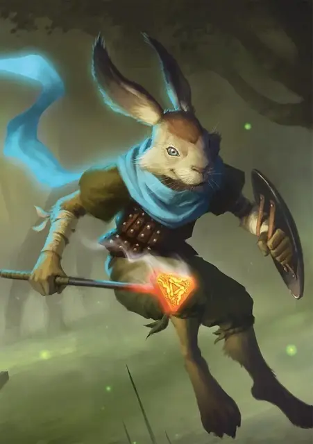

Агдон Длинный шарф
Agdon Longscarf
Средний Гуманоид (Зайцегон), хаотично-злой, именной НИП

Класс Доспеха 19 (проклёпанный кожаный доспех, щит)
Хиты 36 (8к8)
Скорость 35 футов (70 пока на нём его шарф)
| мод | спас | ||
|---|---|---|---|
| СИЛ | 11 | +0 | +0 |
| ЛОВ | 20 | +5 | +7 |
| ТЕЛ | 11 | +0 | +0 |
| мод | спас | ||
|---|---|---|---|
| ИНТ | 11 | +0 | +0 |
| МДР | 14 | +2 | +4 |
| ХАР | 16 | +3 | +3 |
Навыки Акробатика +7, Восприятие +6, Ловкость рук +7, Скрытность +7
Чувства пассивное Восприятие 16
Языки Общий, Сильван
Опасность 2 (450 опыта)
Бонус мастерства +2
Особенности
Прыжок с места. Агдон прыгает в длину на расстояние до 20 футов и в высоту до 10, с разбега или без него.
Увёртливость. Если Агдон попадает под действие эффекта, который позволяет совершить спасбросок Ловкости, чтобы получить половину урона, Агдон не получает урона при успехе и половину урона при провале, при условии что Агдон дееспособен.
Действия
Мультиатака. Агдон совершает две атаки Клеймом или Кинжалом.
Клеймо. . Рукопашная атака оружием: +7 к попаданию, досягаемость 5 футов, одна цель. Попадание: 10 (3к6) урона огнём, и цель становится магически заклеймленной. Аддон невидим для существ, заклейменных таким образом. Клеймо исчезает через 24 часа, или его можно снять с существа или предмета любым заклинанием, снимающим проклятие.
Кинжал. . Рукопашная или дальнобойная атака оружием: +7 к попаданию, досягаемость 5 футов или дистанция 20/60 футов, одна цель. Попадание: 7 (1к4 + 5) колющего урона.
Бонусные действия
Быстрые пальцы. Агдон нацеливается на одно существо в пределах 5 футов от него, которое он может видеть, и совершает проверку Ловкости (Ловкость рук) Сл, равной 1 + значение пассивной Мудрости (Восприятия) цели. В случае успеха Агдон крадет один предмет весом 1 фунт или меньше, который находится у цели, но не находится в её руках, при этом цель не замечает кражи.
Реакции
Невероятное уклонение. Агдон уменьшает вдвое урон от попавшей по нему атаки. Агдон должен видеть нападавшего.
Описание
В былые времена Агдон Длинный шарф сделал себе имя, когда он и его банда негодяев угрожали путешественникам в различных владениях Страны фей. Однако именно в Призмире выходкам Агдона пришел конец от руки Зибильны. В наказание за свои проступки архифея потребовал, чтобы Агдон отдал свой любимый шарф. Когда он отказался, Зибильна проклял его так, что он никогда не сможет его снять. После чего она приколола шарф к молодому деревцу волшебным гвоздем, сделанным из золота и железа, и приказала дереву расти, пока его ветви не коснутся облаков. Таким образом, Агдон был поднят в небо, где он застрял на долгое время.
Прибытие Ковена Песочных Часов ознаменовало поворот судьбы Агдона Длинного шарфа вспять. Когда Зибильна оказался в ловушке временного стазиса, верная банда Агдона смогла срубить его тюрьму на дереве. Но его шарф оставался приколотым к срубленному стволу, а вместе с ним и он сам, пока Бавлорна не заключила с ним сделку — она согласилась удалить гвоздь и освободить шарф в обмен на лучшую вещь от каждого из его последующих рейдов.
Шарф Агдона - это ярко-синий отрезок ткани, который, как он утверждает, был соткан из молний, которые он украл прямо из-под темного облака. Шарф нельзя снять, даже если Агдон умрёт. Его клеймо для клеймения работает только для него, и оно перестает быть горячим, когда покидает его руку. Клеймо, которую он выжигает, имеет форму трех прыгающих кроликов, соединенных носом с хвостом, образуя треугольник.